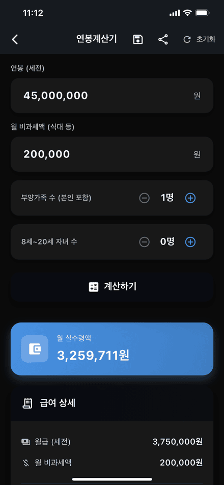
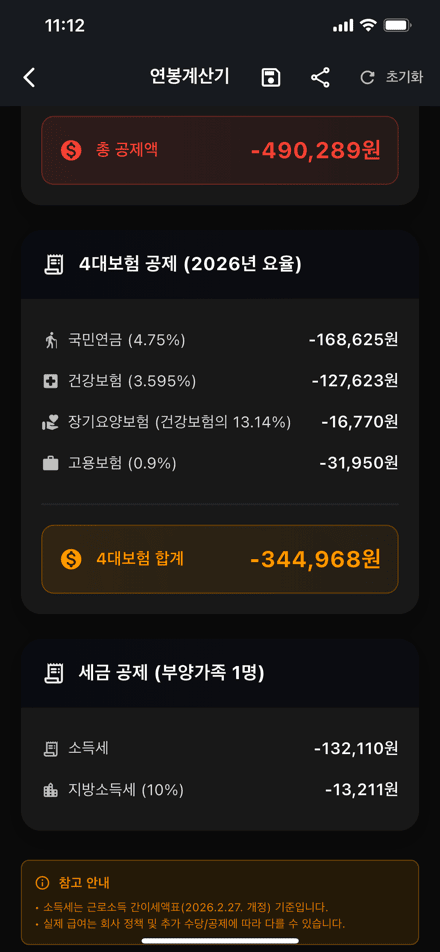
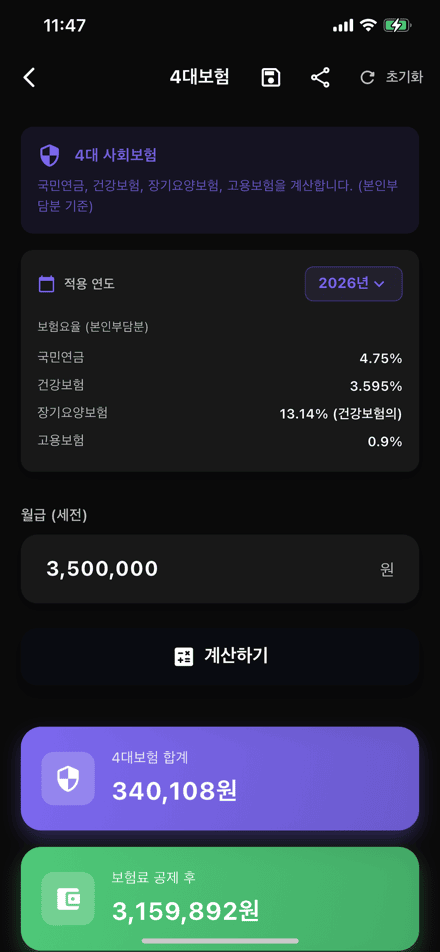
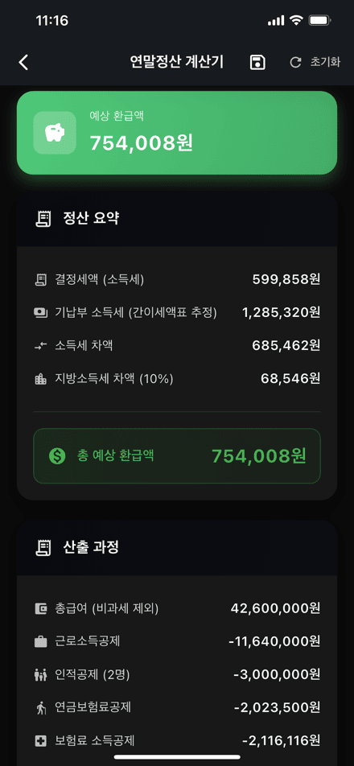
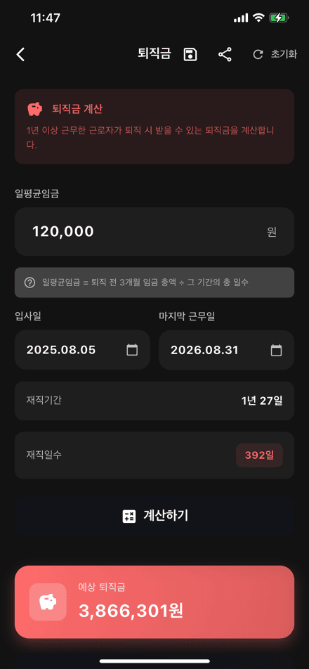
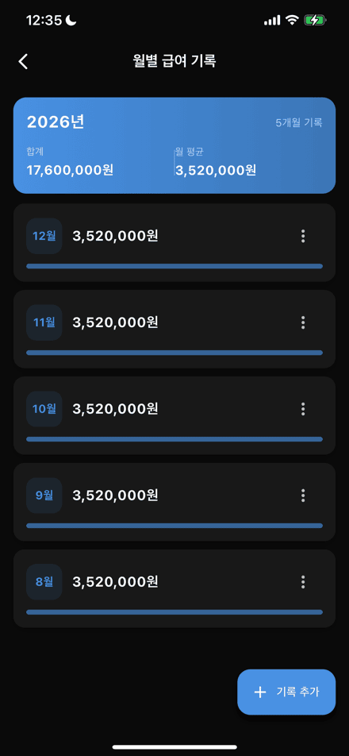

급여계산기
내 통장에 실제로 꽂히는 돈은 얼마일까.
연봉·4대보험·퇴직금·연말정산까지, 흩어져 있던 계산을 한 앱에 담았습니다.
내 통장에 실제로 꽂히는 돈은 얼마일까.
연봉·4대보험·퇴직금·연말정산까지, 흩어져 있던 계산을 한 앱에 담았습니다.
급여계산기는 직장인이 급여와 관련해 궁금해하는 거의 모든 숫자를 한 앱에서 계산해 주는 도구입니다. 연봉을 입력하면 4대보험과 소득세·지방소득세를 차례로 떼어낸 뒤 월 실수령액을 알려주고, 어떤 항목에서 얼마가 빠져나갔는지 공제 내역을 한 줄씩 펼쳐 보여줍니다. 비과세액(식대 등)과 부양가족 수, 8세~20세 자녀 수까지 반영하기 때문에 실제 급여명세서에 가까운 결과를 확인할 수 있습니다.
계산기는 연봉 하나로 끝나지 않습니다. 월급↔연봉 환산, 시급 계산, 주휴수당, 야근수당 같은 급여 계산부터 4대보험, 퇴직금, 연말정산 예상 환급액, 프리랜서 3.3% 원천징수, 최저시급 확인까지 총 10가지 계산기를 갖췄습니다. 4대보험 요율은 2026년 기준(국민연금 4.75%, 건강보험 3.595%, 장기요양 건강보험료의 13.14%, 고용보험 0.9%)을 반영했으며, 지난 연도 요율로도 전환해 계산할 수 있습니다.
계산으로 끝내지 않고 기록으로 남깁니다. 매월 실수령액을 월별 급여 기록에 저장하면 연간 합계와 월 평균이 자동으로 정리되고, 계산 결과는 PDF로 저장하거나 바로 공유할 수 있습니다. 급여일과 연말정산 시즌 알림, 홈 화면 위젯으로 급여일 D-day와 최근 실수령액을 확인하는 기능도 함께 준비했습니다. 현재 출시 준비 중이며, App Store와 Google Play 등록이 완료되는 대로 이 페이지에서 안내해 드리겠습니다.
연봉부터 퇴직금·연말정산까지, 한 앱에서
연봉과 비과세액, 부양가족·자녀 수를 입력하면 4대보험과 세금을 차감한 월 실수령액과 공제 내역을 한눈에 보여줍니다.
국민연금·건강보험·장기요양보험·고용보험 본인부담분을 항목별로 계산하고, 적용 연도를 바꿔가며 비교할 수 있습니다.
일평균임금과 입사일·마지막 근무일만 넣으면 재직기간과 재직일수를 자동 산출해 예상 퇴직금을 계산합니다.
기납부 소득세와 추가 소득공제·세액공제를 반영해 예상 환급액 또는 추가 납부액과 산출 과정을 보여줍니다.
시급 기반 급여와 주 15시간 이상 근무 시 주휴수당, 연장·야간·휴일 근로 가산수당까지 계산합니다.
매월 실수령액을 기록하면 연간 합계와 월 평균이 자동으로 정리되어 한 해 급여 흐름을 확인할 수 있습니다.
계산 결과를 PDF로 내보내거나 바로 공유할 수 있고, 지난 계산은 기록에서 다시 열어볼 수 있습니다.
급여일과 연말정산 시즌 알림을 받고, 홈 화면 위젯에서 급여일 D-day와 최근 실수령액을 바로 확인합니다.
급여 계산기 5종 · 세금/보험 계산기 5종
숫자에 집중할 수 있는 다크 톤 UI

연봉계산기

공제 내역

4대보험

연말정산
연봉과 월 비과세액, 부양가족 수, 8세~20세 자녀 수를 입력하고 계산하기를 누르면 월 실수령액이 바로 나옵니다. 급여 상세에서는 세전 월급과 비과세액을, 공제 항목에서는 4대보험과 소득세·지방소득세가 각각 얼마인지 확인할 수 있습니다.
총 공제액만 보여주고 끝내지 않습니다. 국민연금·건강보험·장기요양보험·고용보험을 요율과 함께 한 줄씩 보여주고, 소득세와 지방소득세도 따로 표시합니다. 소득세는 근로소득 간이세액표를 기준으로 계산합니다.
연봉과 부양가족 정보에 기납부 소득세, 신용카드 등 추가 소득공제와 연금저축·월세 등 세액공제를 더하면 예상 환급액을 알려줍니다. 총급여에서 근로소득공제·인적공제·연금보험료공제를 거쳐 결정세액이 나오기까지의 산출 과정도 함께 보여줍니다.
퇴직금은 일평균임금과 입사일·마지막 근무일만 입력하면 재직기간과 재직일수를 자동으로 계산해 예상 금액을 산출합니다. 4대보험은 월급만 넣으면 본인부담분 합계와 공제 후 금액을 바로 확인할 수 있습니다.

매월 실수령액을 기록해 두면 연간 합계와 월 평균이 자동으로 계산됩니다. 월별 막대로 흐름을 확인하고, 기록은 언제든 추가·수정할 수 있습니다.

4대보험 본인부담분과 최저시급을 최신 기준으로 반영했습니다
급여계산기에 대해 궁금한 점을 확인하세요
연봉계산기, 월급↔연봉 환산, 시급 계산기, 주휴수당, 야근수당 등 급여 계산기 5종과 4대보험, 퇴직금, 연말정산 계산기, 프리랜서 3.3%, 최저시급 확인 등 세금·보험 계산기 5종, 총 10가지 계산기를 제공합니다.
4대보험은 2026년 요율(국민연금 4.75%, 건강보험 3.595%, 장기요양 건강보험료의 13.14%, 고용보험 0.9%)을 기본으로 적용하며, 앱에서 적용 연도를 바꿔 지난 연도 기준으로도 계산할 수 있습니다. 소득세는 근로소득 간이세액표를 기준으로 계산합니다.
참고용 계산 결과입니다. 실제 급여는 회사의 급여 정책, 추가 수당, 비과세 항목 구성, 개인별 공제 내역에 따라 달라질 수 있습니다. 정확한 금액은 급여명세서와 원천징수영수증을 확인해 주세요.
네. 계산 결과는 앱에 기록으로 저장되며, PDF로 내보내거나 메신저 등으로 바로 공유할 수 있습니다. 월별 실수령액은 월별 급여 기록에 모아 연간 합계와 월 평균으로 확인할 수 있습니다.
현재 출시 준비 중입니다. App Store와 Google Play 등록이 완료되는 대로 이 페이지와 소식 페이지를 통해 다운로드 링크를 안내해 드리겠습니다.